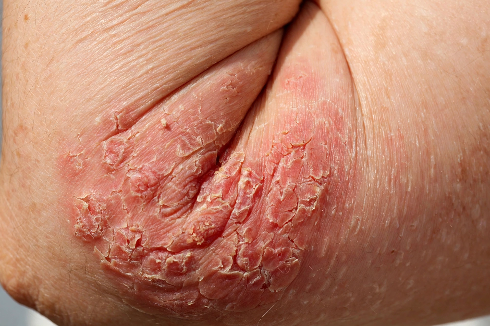

Atopic dermatitis
| Atopic dermatitis | |
|---|---|
| Specialty | Dermatology |
| Symptoms | Itchy, red, swollen, cracked skin |
| Usual onset | Childhood |
| Causes | Genetic and environmental factors; skin-barrier dysfunction; immune dysregulation |
| Treatment | Moisturisers, topical corticosteroids, calcineurin inhibitors, biologics (e.g. dupilumab) |
| Frequency | Up to ~20% of children; ~2–10% of adults |

Atopic dermatitis (AD), also known as atopic eczema, is a long-term type of inflammation of the skin (dermatitis). It results in itchy, red, swollen, and cracked skin. Clear fluid may come from the affected areas, which can thicken over time. Atopic dermatitis typically begins in childhood with changing severity over the years.
Signs and symptoms
The condition commonly affects the creases of the elbows and knees, the face, neck and hands. Intense itching — often worse at night — leads to scratching that damages the skin barrier and predisposes to bacterial and viral skin infections. People with atopic dermatitis frequently have other atopic conditions such as asthma, allergic rhinitis (hay fever), and food allergies.
Causes
Atopic dermatitis results from a combination of genetic predisposition — notably loss-of-function mutations in the filaggrin gene, which weaken the skin barrier — immune dysregulation favouring type-2 inflammation, and environmental triggers such as irritants, allergens, climate and stress.
Management
Management centres on daily emollients to restore the skin barrier, trigger avoidance, and anti-inflammatory treatment. Topical corticosteroids and calcineurin inhibitors are used for flares; phototherapy and systemic agents, including the biologic dupilumab and newer targeted drugs, are used for moderate-to-severe disease.
See also: Dermatitis · Allergy · Asthma